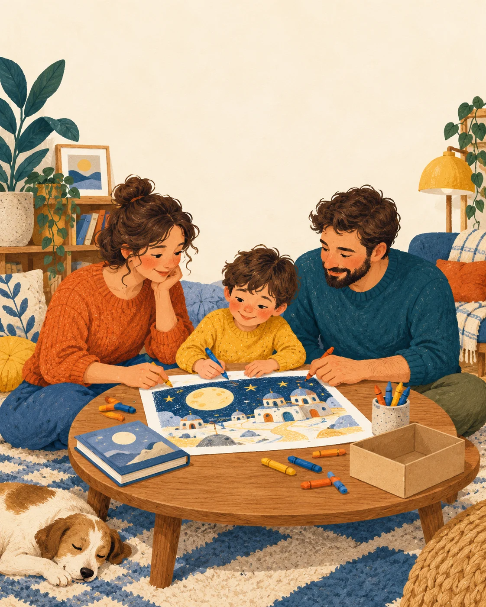
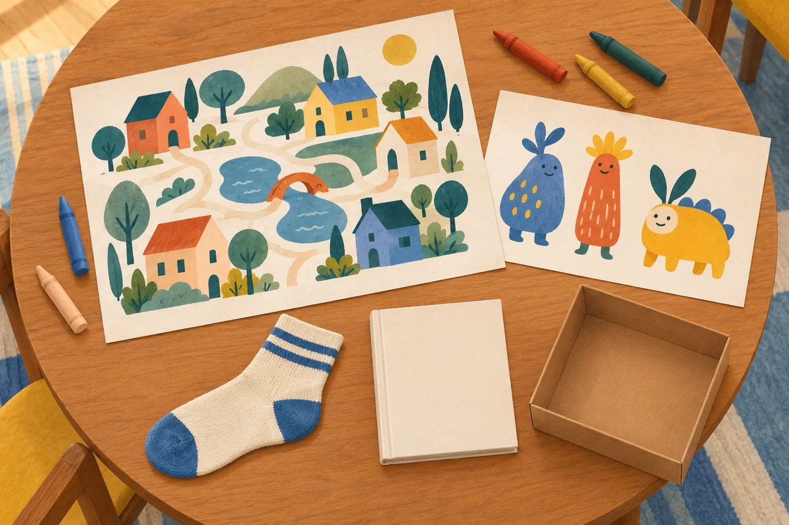
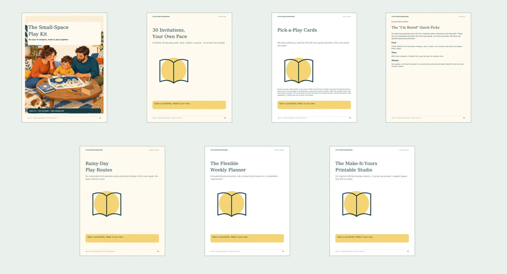

Look at the space.
A supported seat or a stable table. Movement is optional; no running or climbing is needed.
FOR AGES 4-8 + THEIR GROWN-UPS
When “I'm bored” arrives, have an invitation ready.
36 screen-free ways to talk, draw and make believe together. Choose by what you have and where you are, then make the idea your own.
Meet the Small-Space Play Kit ↗Seven English PDF resources · Letter + A4
Adult-accompanied play · No physical delivery

Illustrative sceneA POSSIBLE NEXT STEP
You need an idea that fits this moment.
A quiet conversation. A picture that becomes a place. A clean cardboard box with a pretend new job. The kit turns an open-ended search into two possible invitations to offer.
Good free ideas exist. This bundle is for adults who want the instructions, adaptations and printable support organized in one place.
OPEN A POSSIBILITY
A supported seat or a stable table. Movement is optional; no running or climbing is needed.
Nothing to gather? Start with talk and imagination. Otherwise choose paper or adult-checked household objects.
Read the prompt. Join a first turn. Change, repeat or stop whenever the moment calls for it.
A REAL ACTIVITY FROM THE FINISHED GUIDE
Try the format before considering the bundle.

Illustrative materials. Physical items are not included.
ACTIVITY 14 · PAPER & CRAYONS
Ages 4-5: offer two options for each choice.
Ages 6-8: explain how one body part suits the creature's home.
Another way: describe the creature instead of drawing.
Care: food stays imaginary; do not mix or taste household products.
FIND A STARTING POINT
Preview of the finished guide's organization. An adult checks suitability and stays throughout.
EVERYTHING IN ONE BUNDLE
All seven resources are developed. Choose Letter or A4; you receive the same content in both sizes.

36 activities · 44 pages
One activity per page. Read the invitation, follow three steps, see an illustrated idea, and choose age or participation adaptations. Includes materials, care notes and a closing prompt.
12 + 12 + 12: no supplies, paper/crayons, and adult-selected household objects.
8 pages
Thirty optional days with activity references, small twists, checkboxes and reflection space. A path through 30 main activities, not 30 extra activities or a behavior challenge.
36 cards · 10 pages
Four cards per sheet, each with real steps and care notes. An adult cuts; store in an envelope or box and offer two possibilities. Compact versions of the main activities.
6 no-supply starts · 5 pages
A shorter menu of six main-guide activities, with ready-to-read invitations, condensed steps and a grown-up page for changing or stopping the proposal.
6 routes · 8 pages
Connected optional sessions built from the main activities: a story museum, cloud cafe, object newsroom and more. Use one stop or a whole route.
5 pages
Monday-Sunday spaces for activities, materials, adult preparation, offered/tried checkboxes and notes. Includes a preparation list and weekly reflection.
12 sheets + 2 support pages · 15 pages total
An original maze, matching, look-from-here bingo, patterns, visual search, drawing and story pages, with answers where appropriate. The remaining page is the cover.
95 pages per paper size across seven PDFs. Both sizes contain the same material, not twice as many activities. Bonus tools reuse the main activities where stated.
FOR YOUR HOUSEHOLD
Made for parents and family caregivers accompanying children ages 4-8 at home. The adult reads the instructions, checks materials and joins in.
Children may talk, point, observe or direct the drawing. Reading is not required. An invitation can be shortened, changed, repeated or declined.
This is recreational material, not a classroom license, therapy program or guarantee of engagement, attention, behavior, or reduced screen time. No hands-off care or uninterrupted work time is promised.
THE COMPLETE HOUSEHOLD BUNDLE
PLANNED LAUNCH PRICE
$19 USD
One-time payment.
No subscription or physical shipment.
Explore the sample while purchasing is unavailable.
Any applicable taxes and the final currency will be shown at checkout before payment.
BEFORE YOU CHOOSE
No. Adults can read the guide digitally and set the device aside. Cards and child-facing sheets are intended for optional printing. Choose the correct paper-size folder and print at Actual Size / 100%.
The kit requires adult accompaniment throughout. An adult selects safe materials, reads the directions and joins the activity. It is not a way to leave children unsupervised.
No. “Screen-free” describes the activities. Participation and duration vary. There is no promised behavior, attention or screen-time result.
Seven PDFs in Letter and the same seven in A4: a 44-page guide, 8-page path, 10-page card pack, 5-page quick-pick pack, 8-page rainy-day pack, 5-page planner and 15-page printable pack. No video lessons, printed books or shipped supplies.
The 36 main activities are the core count. The cards, path, quick picks and routes organize or adapt those activities. The printable studio contains 12 additional child-facing sheets, counted separately as printables.
This edition includes a personal/family household license. Classroom, resale, redistribution and shared digital-library rights are not included.
Contact cronicasx.oficial@gmail.com. Purchasing is currently unavailable; no order can be placed on this preview page.
A SMALL BEGINNING IS ENOUGH